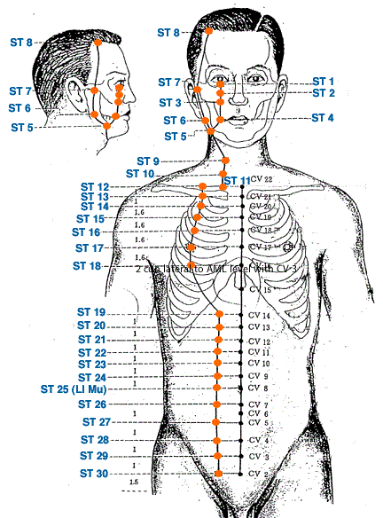

|

|
Meridian Point : ST-1
Location: Below the pupil, between the eyeball and the infraorbital ridge.
English Name: Tear Container
Pinyin Name: Chengqi
Actions & Effect:
Any eye issue, although ST 2 is a good alternative and arguably safer to needle.
Excessive lacrimation, redness, dryness, painful a/or itchy eyes/eyelids, twitching of the eyelids.
Visual disturbances, night blindness.
Disease
Redness, swelling and pain of the eye, night blindness, twitching of the eyelids
Meridian Point : ST-2
Location: Below the pupil, in a depression at the infraorbital foramen.
English Name: Four Whites
Pinyin Name: Sibai
Actions & Effect:
Any eye problem - red, painful and/or itchy eyes, excessive lacrimation, twitching of the eyelids.
Facial paralysis.
Good alternative to ST 1 and safer to needle for those not properly trained.
Disease
Myopia, corneal opacity, redness, itching and pain of the eye, twitching of the eyelids, facial paralysis, headache, vertigo
Meridian Point : ST-3
Location: Directly below the pupil in a depression at the level of the border of the ala nasi.
English Name: Great Bone-Hole
Pinyin Name: Juliao
Actions & Effect:
Local point - Twitching eyelids, pain a/or swelling of the cheek, trigeminal neuralgia, toothache.
Deviation from stroke, bell's palsy, facial paralysis.
Swelling of the knee (Deadman text).
Disease
Facial paralysis, twitching of the eyelids, epistaxis, toothache, swelling of the lips and cheeks
Meridian Point : ST-4
Location: Directly below the pupil, lateral to the corner of the mouth.
English Name: Earth Granary
Pinyin Name: Dicang
Actions & Effect:
Facial pain - Bell's palsy, facial paralysis, trigeminal neuralgia, deviation of mouth from stroke, toothache.
Inability to close the eye, eye twitching, itching, night blindness.
Inability to eat.
May be helpful for atrophy and/or movement issues within the legs.
Disease
Twitching of the eyelids, twitching of the corner of the mouth, facial distortion, drooling
Meridian Point : ST-5
Location: Anterior to the angle of the mandible on the anterior border of the masseter muscle in a groove-like depression (facial artery groove), with cheeks bulged.
English Name: Great Reception
Pinyin Name: Daying
Actions & Effect:
Local point - Pain a/or swelling of the cheek/jaw, neck pain, lockjaw, toothache.
Stiff tongue leading to speech problems, frequent yawning.
Inability to close eye.
Disease
Swelling of the cheek, toothache
Meridian Point : ST-6
Location: One finger width anterior and superior to the angle of the mandible at the belly of the masseter muscle with teeth clenched.
English Name: Jawbone
Pinyin Name: Jiache
Actions & Effect:
Eliminate wind from the face - TMJ, toothache, Bell's palsy, twitching, facial pain/paralysis.
Loss of voice, deviation of mouth/face, lockjaw.
Disease
Lockjaw, Swelling of the cheek, toothache and swelling of cheeks
Meridian Point : ST-7
Location: On the face, anterior to the ear, in a depression between the zygomatic arch and the mandibular notch, with mouth closed.
English Name: Below the Joint
Pinyin Name: Xiaguan
Actions & Effect:
TMJ, facial pain, lower jaw toothache.
Hearing issues, deafness, tinnitus, ear pain, ear discharge/infections.
Disease
Deafness, tinnitus, nasal congestion, toothache, lockjaw, facial distortion and swelling and pain of the cheeks
Meridian Point : ST-8
Location: Directly above ST 7, .5 cun within the anterior hairline at the corner of the forehead, 4.5 cun lateral to the midline of the head (GV 24).
English Name: Head Corner
Pinyin Name: Touwei
Actions & Effect:
Classically mentioned for "splitting headache; headache w/nausea/vomiting; headache w/eye pain (migraine)" - particularly for frontal headaches.
Poor vision, twitching eyelids, eye pain, excessive tearing.
Dizziness.
Hair loss.
Disease
Headache, vertigo, twitching of the eyelids
Meridian Point : ST-9
Location: Level with the tip of the Adam's Apple on the anterior border of the sternocleidomastoideus muscle (where the pulse of the common cartoid artery is felt).
English Name: Man's Prognosis
Pinyin Name: Renying
Actions & Effect:
In ancient times the ST Qi was assessed by palpating the pulse here and at ST 42.
Regulation of Blood Pressure - lowering high blood pressure.
Headache, dizziness.
Sore throat, counterflow qi (vomiting), coughing, hiccups.
Acute lumbar sprain, lower back pain.
Window of the Sky Point - restores Qi flow between the body and the head - useful with headache, chest tightness, asthma.
Tong Ren/Tam Healing System: Used to effect the common carotid artery. With acupuncture and tuina we often use LI 18 instead as it is safer, for Tong Ren and light tuina, however, it is fine to use.
Falls into the category of Window of the Sky points within the Tam Healing system.
Disease
Sore throat, scrofula, goiter, asthma, hypertension
Meridian Point : ST-10
Location: Midway between ST 9 and ST 11 at the anterior border of the sternocleidomastoideus muscle.
English Name: Water Prominence
Pinyin Name: Shuitu
Actions & Effect:
Local point - swollen/sore throat, shortness of breath, goitre, scrofula.
Tong Ren/Tam Healing System: Used to effect the circulation within the common carotid artery and the vagus nerve.
Useful for issues such as high cholesterol, constipation, cancer of the larynx, etc.
Falls into the category of Window of the Sky points within the Tam Healing system.
Disease
Sore throat, cough and asthma
Meridian Point : ST-11
Location: At the superior border of the clavicle between the sternal and clavicular heads of the sternocleidomastoideus muscle.
English Name: Qi Abode
Pinyin Name: Qishe
Actions & Effect:
Local point - sore/swollen throat - counterflow qi, cough, hiccups, reflux.
Neck pain - pain, inability to turn neck.
Tong Ren/Tam Healing System: Main point to open the circulation of the common carotid artery.
Useful for conditions such as acid reflux, arteriosclerosis, hypertension, kidney cancer, bladder cancer, etc.
Falls into the category of Window of the Sky points within the Tam Healing system.
Disease
Chest congestion, cough and asthma, dyspnea
Meridian Point : ST-12
Location: In the midpoint of the supraclavicular fossa, 4 cun lateral to the anterior midline.
English Name: Empty Basin
Pinyin Name: Quepen
Actions & Effect:
Shoulder pain (esp. that radiates to neck).
Neck/throat issues - tightness/pain.
Cough, counterflow qi, sore, swollen throat (rebellious lung qi).
Internal branch of the ST meridian connects here directly from the Stomach, Spleen & Diaphragm - tonify middle warmer.
Tong Ren/Tam Healing System: Used to effect the circulation within the subclavian artery.
Useful for bursitis, tennis elbow, carpal tunnel syndrome, etc.
Falls into the category of Window of the Sky points within the Tam Healing system.
Disease
Cough, asthma, sore throat
Meridian Point : ST-13
Location: 4 cun lateral to the AML at the lower border of the clavicle.
English Name: Qi Door
Pinyin Name: Qihu
Actions & Effect:
Asthma, cough, wheezing, chest distention, hiccups.
Local point - rib pain, inability to turn head, neck pain.
Disease
Cough, asthma, sore throat
Meridian Point : ST-14
Location: 4 cun lateral to the AML in the 1st ICS.
English Name: Storeroom
Pinyin Name: Kufang
Actions & Effect:
Cough.
Sensation of tightness a/or fullness in the chest.
Disease
Cough, asthma, sore throat
Meridian Point : ST-15
Location: 4 cun lateral to the AML in the 2nd ICS.
English Name: Roof
Pinyin Name: Wuyi
Actions & Effect:
Asthma, chest oppression, fullness a/or pain in the chest.
Breast pain, distention, mastitis, abscess.
General pain, heaviness and/or itching of the whole body.
Disease
Cough, asthma, sore throat
Meridian Point : ST-16
Location: 4 cun lateral to the AML in the 3rd ICS.
English Name: Breast Window
Pinyin Name: Yingchuang
Actions & Effect:
Chest tightness a/or pain, asthma, cough.
Breast pain, abscess, mastitis.
Swelling of the lips (with LV 3).
Disease
Cough, asthma, sore throat
Meridian Point : ST-17
Location: 4 cun lateral to the AML in the 4th ICS.
English Name: Breast Center
Pinyin Name: Ruzhong
Actions & Effect:
Never needled or treated, simply a body landmark for locating points on the chest.
Disease
Cough, asthma, sore throat
Meridian Point : ST-18
Location: 4 cun lateral to the AML in the 5th ICS.
English Name: Breast Root
Pinyin Name: Rugen
Actions & Effect:
Any issues with the breasts - mastitis, pain/swelling, insufficient lactation.
Chest tightness/oppression, asthma, cough.
Disease
Chest pain, cough and asthma, hiccup
Meridian Point : ST-19
Location: 2 cun lateral to the AML level with CV 14.
English Name: Not Contained
Pinyin Name: Burong
Actions & Effect:
Abdominal pain, bloating, vomiting (rebellious stomach qi).
Gastric pain, gall bladder issues.
Anorexia, poor appetite.
Disease
Stomach ache, Gastric pain, vomiting, poor appetite, abdominal distention, diarrhea
Meridian Point : ST-20
Location: 2 cun lateral to the AML level with CV 13.
English Name: Assuming Fullness
Pinyin Name: Chengman
Actions & Effect:
Abdominal pain, bloating, hiccups, gastric pain, vomiting.
Anorexia, poor appetite, diarrhea.
Shortness of breath, wheezing.
Disease
Stomach ache, Gastric pain, vomiting, poor appetite, abdominal distention, diarrhea
Meridian Point : ST-21
Location: 2 cun lateral to the AML level with CV 12.
English Name: Beam Gate
Pinyin Name: Liangmen
Actions & Effect:
Tonifies Middle Warmer, assists CV 12.
Epigastric pain, accumulations of food in the abdomen a/or palpable masses, vomiting.
Diarrhea, poor appetite, anorexia.
Disease
Stomach ache, Gastric pain, vomiting, poor appetite, abdominal distention, diarrhea
Meridian Point : ST-22
Location: 2 cun lateral to the AML level with CV 11.
English Name: Pass Gate
Pinyin Name: Guanmen
Actions & Effect:
Abdominal pain, bloating, gurgling in the stomach/intestines (boborygmus).
Diarrhea, constipation, poor appetite.
Edema.
Useful for bedwetting with HT 7 and UB 40 or LU 1 and HT 7 (deadman text).
Disease
Abdominal distention and pain, borborygmus, diarrhea
Meridian Point : ST-23
Location: 2 cun lateral to the AML level with CV 10.
English Name: Supreme Unity
Pinyin Name: Taiyi
Actions & Effect:
Abdominal pain, epigastric pain, bloating, poor appetite, diarrhea.
Shen/Spirit related imbalances related to phlegm - manic depression, irritability, anxiety.
Used with ST 24 for manic depression with stiff/thrusting tongue.
Disease
Psychosis, irritability, protruding tongue
Meridian Point : ST-24
Location: 2 cun lateral to the AML level with CV 9.
English Name: Slippery Flesh Gate
Pinyin Name: Huaroumen
Actions & Effect:
Epigastric pain, vomiting (rebellious qi).
Similar effects as ST 23 on phlegm related shen issues - manic depression, anxiety, mania.
Used with ST 23 for manic depression with stiff/thrusting tongue.
Disease
Manic psychosis, vomiting, protruding tongue, stiff tongue
Meridian Point : ST-25
Location: 2 cun lateral to the AML level with CV 8.
English Name: Celestial Pivot
Pinyin Name: Tianshu
Actions & Effect:
All intestinal issues - constipation, diarrhea, dysentary, distention, pain, masses/accumulations of any type.
Irregular menstruation, painful menstruation, fibroids/cysts, fertility issues and leukorrhea.
Connects the Upper and Lower Warmers (pre & post natal Qi).
Disease
Abdominal distention, borborygmus, pain around the umbilicus, constipation, diarrhea, dysentery, irregular menstruation
Meridian Point : ST-26
Location: 2 cun lateral to the AML level with CV 7.
English Name: Outer Mound
Pinyin Name: Wailing
Actions & Effect:
Abdominal pain, bloating, hernias.
Menstrual issues - dysmenorrhea (cramps/painful menstruation), amenorrhea (absense of menstruation), irregular cycles.
Disease
Abdominal pain, hernia
Meridian Point : ST-27
Location: 2 cun lateral to the AML level with CV 5.
English Name: Great Gigantic
Pinyin Name: Daju
Actions & Effect:
Beneficial for multiple genito-urinary issues in men - impotence (erectile dysfunction), seminal emission, premature ejaculation, difficult urination, etc.
Irregular menstruation.
Abdominal pain, bloating, hernia.
Fear/fright with palpitations, anxiety, panic attacks, insomnia, etc..
Disease
Lower abdominal distention and pain
Meridian Point : ST-28
Location: 2 cun lateral to the AML level with CV 4.
English Name: Waterway
Pinyin Name: Shuidao
Actions & Effect:
Excess Cold/Damp Issues of the Lower Warmer - retention of urine, inflammations.
Gynecological issues of an excess nature - dysmenorrhea, fibroids, cysts.
Fertility issues in women, cold in the uterus.
Expel either the placenta after birth or a still born child.
Disease
Lower abdominal distention, infertility, hernia
Meridian Point : ST-29
Location: 2 cun lateral to the AML level with CV 3.
English Name: Return
Pinyin Name: Guilai
Actions & Effect:
Excess or Cold/Deficient disorders of the Lower Warmer - amenorrhea, irregular menstruation, dysmenorrhea, qi stagnation/masses, leukorrhea.
Uterine prolapse, hernia.
Infertility, genital pain and/or swelling, impotence, seminal emission.
Running Piglet Disorder.
Disease
Irregular menstruation, hernia, abdominal pain, hernia, prolapse of the uterus
Meridian Point : ST-30
Location: 2 cun lateral to the AML level with CV 2.
English Name: Surging Qi
Pinyin Name: Qichong
Actions & Effect:
Upper Sea of Water & Grain Point - excess or deficient conditions of the Stomach - hypogastric pain, bloating, abdominal pain.
Regulates the Intestines - borborygmus, hernia - rectal, inguinal.
Regulates genitalia - swelling and pain, impotence.
Regulates menstruation - irregular menstruation, dysmenorrhea, amenorrhea, uterine bleeding.
Running Piglet Disorder.
Disease
Hernia, irregular menstruation, irritability, impotence
Meridian Point : ST-31
Location: On 2 lines connecting the ASIS and the superiolateral corner of the patella and level with the lower border of symphysis pubis in a depression with thigh flexed lateral to the sartorius muscle.
English Name: Thigh Joint
Pinyin Name: Biguan
Actions & Effect:
ST 31, ST 32 & ST 33 are all useful for Bi-Syndromes a/or Wei Syndromes (flaccidity or weakness) of the lower legs.
Pain in the thigh, muscular atrophy/weakness, knee pain, low back pain.
Disease
Muscular atrophy, weakness, numbness and pain of lower extremities, coldness and pain of the lower back and knee
Meridian Point : ST-32
Location: 6 cun above the superior lateral border of the patella on the line connecting with the ASIS.
English Name: Crouching Rabbit
Pinyin Name: Futu
Actions & Effect:
ST 31, ST 32 & ST 33 are all useful for Bi-Syndromes a/or Wei Syndromes (flaccidity or weakness) of the lower legs.
Muscular atrophy of the lower leg, thigh, knee pain, low back pain.
Beriberi (thiamine, B1 deficiency).
Disease
Paralysis or weakness of the lower extremities, coldness and pain of the lower back and knee
Meridian Point : ST-33
Location: With knee flexed, 3 cun above the superior lateral border of the patella on line connecting with the ASIS.
English Name: Yin Market
Pinyin Name: Yinshi
Actions & Effect:
ST 31, ST 32 & ST 33 are all useful for Bi-Syndromes a/or Wei Syndromes (flaccidity or weakness) of the lower legs.
Weakness, numbness, motor control issues of the leg and/or knee.
Disease
Coldness and pain of the lower extremities and knee, limitation of the lower extremities, hernia, abdominal distention and pain
Meridian Point : ST-34
Location: With knee flexed, 2 cun above the superior lateral border of the patella on the line connecting with the ASIS.
English Name: Beam Hill
Pinyin Name: Liangqiu
Actions & Effect:
Lateral knee issues, swelling, pain, difficult movement.
Pain, motor control, circulation issues of the knee and/or lower leg.
Excess & Acute issues of the Stomach and chest - acute Stomach pain, GERD, vomiting, acute breast pain.
Disease
Stomach ache, Acute gastric pain, swelling and pain of the knee joint, weakness of the lower extremities
Meridian Point : ST-35
Location: With knee flexed, below the patella in a depression lateral to the patellar ligament.
English Name: Calf's Nose
Pinyin Name: Dubi
Actions & Effect:
Knee problems. Often used with heding and the medial xiyan extra points.
Weakness and/or motor control issues of the lower leg, atrophy.
Beriberi (Thiamine, B1 deficiency).
Disease
Swelling and pain of the knee joint
Meridian Point : ST-36
Location: 3 cun below ST 35, one finger width lateral from the anterior border of the tibia.
English Name: Leg Three Li
Pinyin Name: Zusanli
Actions & Effect:
Tonify deficient Qi a/or Blood.
Tonify Wei Qi and Qi overall - low immunity, chronic illness, poor digestion, general weakness, particularly with moxibustion, very important acupuncture point for building and maintaining overall health.
All issues involving the Stomach a/or the Spleen - abdominal/epigastric pain, borborygmus, bloating, nausea, vomiting, GERD, hiccups, diarrhea, constipation, etc.
Clear disorders along the course of the channel - breast problems, lower leg pain.
Earth as the mother of Metal - will support Lung function in cases of asthma, wheezing, dyspnea.
Psychological/Emotional disorders - PMS, depression, nervousness, insomnia.
Disease
Gastric pain, vomiting, dysphagia, abdominal distention, borborygmus, diarrhea, indigestion, dysentery, constipation, abdominal pain, palpitation, shortness of breath, poor appetite, lassitude, dizziness, insomnia, cough and asthma, pain in the knee joint
Meridian Point : ST-37
Location: 6 cun below ST 35, one finger width lateral from the anterior border of the tibia.
English Name: Upper Great Hollow
Pinyin Name: Shangjuxu
Actions & Effect:
Generally for excess and more acute disorders of the intestines and digestive system involving dampness and/or heat - diarrhea, dysentary, boborygmus, abdominal pain, bloating, distention, constipation.
Sea of Blood Point - if excess the patient may have feelings of largeness, whereas, if deficient the patient may feel small.
Disease
Abdominal pain, borborygmus, constipation, diarrhea, muscular atrophy, weakness, numbness and pain of the lower extremities
Meridian Point : ST-38
Location: 8 cun below ST 35, one finger width lateral from the anterior border of the tibia.
English Name: Ribbon Opening
Pinyin Name: Tiaokou
Actions & Effect:
Empirical point for shoulder issues - pain, motor control, adhesive capsulitis or "frozen shoulder."
Local point for lower leg issues - pain, atrophy, numbness.
Disease
Coldness, pain, and weakness of the shoulder, muscular atrophy, weakness, numbness and pain of the lower extremities, swelling of the foot, spasm
Meridian Point : ST-39
Location: 9 cun below ST 35, one finger width lateral from the anterior border of the tibia.
English Name: Lower Great Hollow
Pinyin Name: Xiajuxu
Actions & Effect:
Disorders of the Small Intestine organ - abdominal pain, diarrhea, dysentary.
SI channel problems - breast issues, mastitis, pain/swelling/numbness along channel.
Local point for lower leg issues - pain, numbness, motor control, atrophy.
Disease
Lower abdominal pain, pain in the lower back referring to pain in the testicles, diarrhea, dysentery, muscular atrophy, weakness, numbness and pain of the lower extremities
Meridian Point : ST-40
Location: 8 cun below ST 35, one finger width lateral to ST 38, two finger widths lateral to the anterior border of the tibia.
English Name: Beautiful Bulge
Pinyin Name: Fenglong
Actions & Effect:
Empirical point to resolve phlegm in the body anywhere from any origin.
Phlegm in the head - headaches, dizziness / vertigo, depression, poor concentration, stronger shen disturbances - mania.
Phlegm in the body - chest oppression, breathing issues, asthma, cough.
Plum Pit Qi, sore throat, loss of voice.
Issues with the lower limbs involving pain, swelling, numbness, weakness, etc.
Disease
Vomiting, constipation, cough, excessive phlegm, asthma, psychosis, headache, dizziness, paralysis or weakness of the lower extremities
Meridian Point : ST-41
Location: On the midpoint of the transverse crease of the ankle, approximately level with the tip of the external malleolus, in a depression between the tendons of extensor digitorum longs and hallucis longus.
English Name: Ravine Divide
Pinyin Name: Jiexi
Actions & Effect:
Opposite end of channel issues (i.e. head/face) - swelling, headache, dizziness / vertigo.
Abdominal pain, bloating, constipation.
Can aid groundedness and focus - ADD/ADHD, mania, restlessness, palpitations, epilepsy.
Local point for ankle issues - sprains, inflammation, motor impairment, foot pain, pain in the 1st and 2nd toes.
Disease
Pain of the ankle joint, weakness and muscular atrophy, numbness and pain of the lower extremities, headache, dizziness, manic psychosis, abdominal distention, constipation
Meridian Point : ST-42
Location: Between the 2nd and 3rd metatarsals and the cuneiform bone, between the tendons of the long extensor muscles of the big toe and other toes.
English Name: Surging Yang
Pinyin Name: Chongyang
Actions & Effect:
Issues on the upper end of the channel (i.e. mouth/face/head) - upper mouth/teeth issues, toothache, deviation of the face as in bell's palsy or stroke.
Local point for foot pain - pain, swelling, redness - also motor control issues of the foot.
Disease
Gastric pain, abdominal distention, swelling and pain of the dorsum of the foot, swelling of the face, toothache, deviation of the mouth and eye
Meridian Point : ST-43
Location: In a depression distal to the junction of the 2nd and 3rd metatarsal bones.
English Name: Sunken Valley
Pinyin Name: Xiangu
Actions & Effect:
Similar actions to ST 44 but used less often - will clear heat from the channel and organ.
Classically noted for clearing facial pain and/or edema / swelling. May be used for general edema.
Abdominal pain, bloating, borborygmus, frequent belching.
Local point for pain and/or swelling of the dorsum of the foot.
Disease
Myasthenia of the upper eyelid and difficulty opening the eyes, facial and general edema, swelling and pain of the dorsum of the foot, abdominal pain
Meridian Point : ST-44
Location: Proximal to the web margin between the 2nd and 3rd metatarsal bones, in a depression distal and lateral to the 2nd metatarsodigital joint.
English Name: Inner Court
Pinyin Name: Neiting
Actions & Effect:
Ying Spring Point - Clears heat from the channel and organ - febrile disease with absence of sweating.
Useful for issues of the Face & Jaw along with LI 4 - toothache, facial pain, bell's palsy, stroke, sore throat, eye pain.
Damp Heat in the intestines - diarrha, dysentary, distention, abominal pain, constipation, GERD.
Interior heat that presents with cold signs - Feel hot but hands/feet are cold or Red tongue w/cold extremities.
Local point for pain and/or swelling of the dorsum of the foot.
Disease
Toothache, sore throat, dry mouth, epistaxis, abdominal distention, constipation, gastric pain, swelling and pain of the dorsum of the foot, dysentry, diarrhea
Meridian Point : ST-45
Location: .1 cun posterior to the corner of the nail on the lateral side of the 2nd toe.
(See All)
English Name: Severe Mouth
Pinyin Name: Lidui
Actions & Effect:
Release heat a/or move stagnation from the channel and organ - headaches, toothaches, facial pain, sore throat, TMJ, bell's palsy, facial deviation from stroke.
Agitation a/or insomnia w/heat signs, excessive dreaming, loss of consciousness, manic depression - calms the spirit.
Moves cold in the lower limbs, shin, knee.
Disease
Swelling of the face, toothache, sore throat, epistaxis, nightmare, manic psychosis
|